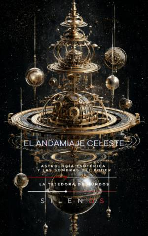

Illuminati
EL ANDAMIAJE CELESTE: Astrología Esotérica y las Sombras del Poder
Sinopsis
Descubre los hilos invisibles que han movido los hilos del poder a lo largo de la historia. El Andamiaje Celeste: Astrología Esotérica y las Sombras del Poder es una investigación profunda y reveladora que explora cómo el estudio de los astros no ha sido solo una cuestión de fe o adivinación, sino una herramienta estratégica fundamental para estados, imperios y líderes mundiales desde la antigüedad hasta la era contemporánea. ¿Qué encontrarás en este libro? A través de un recorrido histórico y analítico, los autores Manuel Rodsua y Cristina Lobo desglosan la compleja relación entre el cosmos y la gestión de lo público. El libro se divide en tres bloques fundamentales que permiten comprender esta influencia: Fundamentos y Cosmogonía Política: Una introducción a la astrología mundana, el concepto de cronocracia y cómo el instante fundacional de una nación marca su destino colectivo. Las Raíces del Poder Antiguo: Un análisis detallado de las civilizaciones de Mesopotamia, Egipto, Grecia y Roma, donde los presagios celestes funcionaban como los primeros servicios de inteligencia estatal. Legitimidad y Control: Un estudio sobre cómo la seducción de la certeza y el uso del cielo como fuente de autoridad han servido para cohesionar sociedades o desactivar oposiciones. ¿Por qué leer esta obra? En un mundo dominado actualmente por métricas y algoritmos, este libro invita a reflexionar sobre la continuidad de estas dinámicas. Reconocer que lo invisible ha decidido a menudo el destino público es el primer paso para construir instituciones más transparentes y democráticas. El Andamiaje Celeste no es solo un libro sobre astrología; es una lección de vigilancia cívica y técnica de democracia que desvela cómo la simbología y los ritmos institucionales siguen operando bajo una lógica que la mayoría de la población ignora. Una lectura esencial para historiadores, analistas políticos, estudiosos del esoterismo y cualquier persona interesada en comprender las estructuras profundas que sostienen el poder.